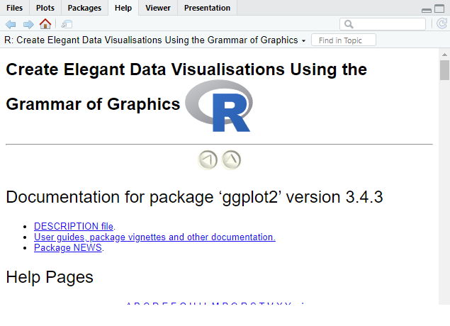

Módulo 1: Generalidades e Introducción a R
¡Conozcámonos!
Acerca del curso
Objetivos de aprendizaje:
Realizar operaciones básicas en R, tales como: cargar, modificar, limpiar y guardar tablas de datos.
Realizar gráficos de manera profesional usando R.
Llevar a cabo análisis exploratorio de datos.
Llevar a cabo, interpretar y reportar los resultados de metodologías estadísticas tales como: pruebas t, pruebas no paramétricas y análisis de varianza.
Crear reportes en formatos docx, pptx, pdf y html usando Quarto y R.
Escribir documentos académicos (por ejemplo una tesis de grado) usando Quarto.
Entender la factibilidad de crear páginas web en combinación de Quarto y GitHub.
Pre-requisitos
Computador con mínimo 2 GB de RAM y procesador de 64 bits.
Conexión estable a internet
Recomendado: sistema operativo Windows 10/11
Generalidades
Estructura del curso
4 sesiones de 5 horas cada una. Días Sábados 16, 23 de Marzo, 6 y 13 de Abril
8H30 a 13H30 (Dos recesos de 10 minutos cada uno)
Canales de comunicación:
- Email: mmorenozambrano@protonmail.com
Tarea final de curso:
40% entrega de autoevaluaciones resueltas (con código en caso de resolución de ejercicios).
60% reporte con aplicación de conocimientos adquiridos sobre una base de datos propia o propuesta durante el curso.
Mínima nota de aprobación: 70%
Generalidades
Materiales:
Las tablas de datos que usaremos son de acceso abierto. En su mayoría, provenientes de paquetes o librerías de R.
Un listado comprensivo de los materiales por módulo se encuentra detallado en la página web del curso.
Recursos complementarios:
He creado el contenido del curso a partir de varios recursos libremente disponibles en el internet (mayoritariamente de fuentes en Inglés).
Al igual que los materiales, los recursos complementarios se encuentran detallados en la página web del curso.
Introducción a R
Una breve historia de R

- 1991: Robert Gentleman y Ross Ihaka (Universidad de Auckland, NZ) empiezan a desarrollar R
- 1995: R se convierte en un proyecto open-source
- 1997: Se establecen el Comprehensive R Archive Network (CRAN) y el R core group
- 2000: Lanzamiento de R versión 1.0.0
- 2003: Se establece la R Foundation
- 2004: Se lleva a cabo la primera conferencia UseR! en Viena, Austria
- 2006: Se edita el primer número del R Journal
- 2011: Lanzamiento de RStudio versión beta
- 2016: Lanzamiento de RStudio versión 1.0.0
- 2017: CRAN alcanza más de 10000 paquetes públicos
¿Por qué R?
Su uso se va extendiendo cada vez más en el ámbito académico (e industrial).
Software libre.
Amplio abanico de paquetes/librerías (20554 al 09.03.2024).
¡Basta comunidad de R enthusiasts!.
Versátil:
Gráficos listos para publicación.
Generación de reportes, páginas web, presentaciones y libros en distintos formatos (rmarkdown, blogdown, quarto).
Construcción de aplicaciones interactivas para visualización/análisis de datos (rshiny).
A continuación, algunos ejemplos de la versatilidad de R.
Gráficos listos para publicación
Gráficos listos para publicación
Moreno-Zambrano, et al. (2018) No publicado
Gráficos listos para publicación
Animaciones
Animaciones
Animaciones
Páginas web
Reportes
Apps interactivas (Shiny Apps)
Instalación de R
Descarga la última versión disponible de R
Ejecuta el archivo .exe para iniciar la instalación
Recomendado: No cambies el directorio sugerido por el asistente de instalación
Opcional: No instalar traducciones de los mensajes de R
Instalación de RStudio
- Ingresa a https://posit.co/download/rstudio-desktop/#download
- Click en la opción de instalar “RStudio Desktop for Windows”
- Ejecuta el archivo .exe para iniciar la instalación
- No cambies las sugerencias pre-establecidas para la instalación
- En el caso de tener una versión de R anterior a la previamente instalada, es probable que la primera vez que abramos RStudio, este nos pregunte que version queremos usar (recomendado usar la última versión de R)
Instalación de Rtools (opcional)
Rtools es una cadena de herramientas para compilar librerías de R en Windows basada en lenguajes C/C++/Fortran.
No es necesario en sistemas operativos de Apple o basados en Unix (Linux).
Se puede usar R en Windows sin necesidad de Rtools por la existencia de versiones de librerías en formato binario (ya previamente compiladas).
Las ventajas de contar con Rtools:
Posibilidad de actualizar librerías a sus mas recientes versiones.
Compilación de versiones beta de librerías experimentales aun no disponibles en CRAN.
Uso de librerías específicas que necesitan de Rtools para su funcionamiento (ej. rstan)
En caso de que desees instalar Rtools, sigue las instrucciones en este link https://cran.r-project.org/bin/windows/Rtools/rtools43/rtools.html
GUI RStudio
GUI RStudio
Editor: ventana donde escribimos código. Puede contener tantas pestañas como scripts de R tengamos abiertos. No se ejecuta a no ser que ordenemos a R hacerlo.
Ambiente/historia de trabajo: nos permite visualizar los objetos que vayamos creando durante la ejecución del código así como el orden de los comandos ejecutados.
Consola: o terminal de R, es la interface directa de RStudio con R. En esta podemos ejecutar comandos línea por línea y visualizar los resultados de la ejecución de lo que escribamos en el editor.
Varias pestañas de importancia:
Plots: donde se producirán los plots que ejecutemos
Packages: listado de librerías instaladas
Help: ayuda de R (activada por comando o búsqueda manual)
Viewer: crea una ventana fuera del ambiente de RStudio para visualizar gráficos
Generalidades del lenguaje R
Como otros lenguajes de programación, R es sensible a letras mayúsculas y minúsculas (
Tabla≠tabla).A diferencia de Python por ejemplo, R no es sensible a la indentación.
- Para asignar contenido (valores o elementos) a un objeto, los operadores de R son
<-,=o->
- No existe una reglamentación de tipo alguno, pero encontrarán que el operador
<-es el más usado.
- R no reconoce nombres de objetos que comiencen con números.
Generalidades del lenguaje R
Al importar tablas, R asigna el valor de la primera fila de cada columna como su nombre.
En el caso de que el nombre de la columna empiece con un número, R asigna caracteres para evitar errores. Ejemplo: si en un archivo de Excel tenemos por nombre de columna
1glucosa, R lo importa comoX.1glucosaEl nombre de la columna de un archivo importado puede contener espacios vacíos, sin embargo su accesso en R requiere de una sintaxis especial. Por tanto, es aconsejable usar caracteres como
_o-cuando deseemos contar con espacios en nuestros archivos a importar.Dentro del ambiente de R, es aconsejable evitar espacios vacíos (se los puede usar, pero igualmente, se requiere de sintaxis especial para referirnos a esos objetos).
- R tiene nombres de funciones y objetos predeterminados. Por ejemplo, elementos que representan respuestas lógicas son representados con las letras
TyF.
- Por tanto, es aconsejable el evitar asignar nombres a nuestros objetos que puedan entrar en conflicto con otras funciones u objetos de R.
Tipos de datos
Los tipos de datos que R es capaz de manejar son diversos. Los más comunes son:
Numéricos, tanto enteros como reales (
num:1,3.14)Caractéres (
chr:"a","estadistica")Factores (
Factor: pueden ser letras o números)Lógicos (
logi:True,Falseo tambiénTyF)Fechas (
Date:"1985-10-14")
Operadores básicos
| Operación | Operador | Ejemplo | Resultado |
|---|---|---|---|
| Suma | + |
10 + 2 |
12 |
| Resta | - |
6 - 3 |
3 |
| Multiplicación | * |
4 * 4 |
16 |
| División | / |
12 / 3 |
4 |
| Potencia | ^ |
5 ^ 2 |
25 |
- Existen otros operadores, como el de “cascada” (pipeline operator)
%>%, que usaremos más adelante
Operadores Booleanos de comparación
| Operación | Operador | Ejemplo | Resultado |
|---|---|---|---|
| Mayor que | > |
5 > 1 |
T |
| Menor que | < |
12 < 11 |
F |
| Igual que | == |
33 == 33 |
T |
| No igual que | != |
10 != 10 |
F |
| Mayor o igual que | >= |
5 >= 5 |
T |
| Menor o igual que | <= |
4 <= 2 |
F |
Operadores Booleanos lógicos
| Operación | Operador | Ejemplo | Resultado |
|---|---|---|---|
| No | ! |
!(1==1) |
F |
| O | | |
(1==1) | (2==3) |
T |
| Y | & |
(1==1) | (2==3) |
F |
Tipos de objetos en R
En R, los objetos son distintas formas de almacenar datos/información.
Existen varios tipos de objetos en R, los más fundamentales:
Escalares
Vectores
Tablas de datos
Matrices
Listas
Tendemos a referirnos a los escalares y vectores comúnmente como variables.
Escalares
Son los objetos más sencillos ya que consisten de un solo elemento.
Son la base para la creación de objetos más complejos.
- R no reconoce una fecha o un factor sin que se lo especifiquemos. Ya veremos más adelante como hacerlo.
Vectores
Son contenedores unidimensionales de dos o más elementos, necesariamente del mismo tipo.
Para crear un vector, usamos la sintaxis
c(), donde los elementos del vector irán dentro del paréntesis:
- ¿Qué pasa con el
vector_4?: cuando escalares de distinto tipo son asignados como elementos de un vector, R transforma todos los elementos a un mismo tipo.
Tablas de datos
Son contenedores bidimensionales que nos permiten almacenar datos de distintos tipos en filas y columnas.
Existen varias formas de crear una tabla en R:
- De manera manual (y quizá la más impráctica) usando la función
data.frame:
- De manera manual (y quizá la más impráctica) usando la función
Tablas de datos
Son contenedores bidimensionales que nos permiten almacenar datos de distintos tipos en filas y columnas.
Existen varias formas de crear una tabla en R:
- De manera manual (y quizá la más impráctica) usando la función
data.frame:
- De manera manual (y quizá la más impráctica) usando la función
Tablas de datos
Las otras formas para crear tablas de datos incluyen:
Invocar tablas de paquetes de R (más para fines didácticos, ya sea que queramos probar un paquete de R, o como en este curso, para la enseñanza).
Importar tablas de datos de archivos de texto (.txt), documentos separados por comas (.csv) o archivos de Excel (.xlsx).
Esta última, sin lugar a dudas la manera más práctica para los fines de analizar nuestros datos.
Sin embargo, ya veremos todo ello en su debido momento.
Matrices
Al igual que las tablas de datos, las matrices nos permiten almacenar datos en filas y columnas.
Sin embargo, una matriz puede contener elementos de un solo tipo.
Matrices
Al igual que las tablas de datos, las matrices nos permiten almacenar datos en filas y columnas.
Sin embargo, una matriz puede contener elementos de un solo tipo.
Matrices
Pero entonces, ¿por qué molestarnos con matrices?
Para un usuario principiante, no hace mayor diferencia, a menos que llegue a hacer uso de paquetes de R que requieren que los datos estén en forma matricial (un ejemplo es la librería para ploteo
lattice).Para un usuario avanzado, la mayor ventaja de tener los datos en forma matricial es que iterar y realizar computaciones sobre estas es más rápido (técnica común en lo que se conoce como low-level programming). Esto, en modelos que requieren bastas cantidades de datos (por ejemplo, data mining o natural language processing) conlleva a una mayor eficiencia en obtener resultados en tareas de identificación de patrones.
Listas
- Arreglo multidimensional de elementos no necesariamente del mismo tipo ni de la misma longitud.
Listas
- Arreglo multidimensional de elementos no necesariamente del mismo tipo ni de la misma longitud.
Antes de continuar…
- ¿Cómo sabemos que tipo de datos tenemos en un vector (u otro objeto) si asignamos escalares de distintos tipos?
Paquetes y librerías en R
Quizá hayan escuchado el uso de estos términos como sinónimos. Siendo más técnicos:
Paquete es una colección de funciones de R, datos y código compilado.
Librería es el directorio donde un paquete de R ha sido instalado y guardado.
Existen dos tipos de paquetes:
Paquetes de base (instalados como librerías estándar de R, ejemplos:
utilsybase)Paquetes de terceras partes (o externos, todos aquellos disponibles en CRAN)
Instalación de paquetes en R
Existen dos formas de instalar paquetes en R
Mediante GUI de RStudio
Mediante el editor o la consola, ventanas 1 y 3 de RStudio, respectivamente
En este curso nos enfocaremos en hacer mínimo uso de la GUI. El motivo: mientras menos dependemos de la GUI, nuestros códigos (scripts) serán mas reproducibles e independientes de nuestra intervención cada vez que sean ejecutados.
Instalación paquetes en R
El comando base de R para instalar paquetes es
install.packagesPuede instalar un paquete a la vez:
- Para llamar (cargar) una librería en R se usa el comando base
library
Ayuda en R
El comando (o función) de ayuda en R es
?.Se usa
?antecediendo al nombre de la función de la que deseemos saber más información. Ejemplo:
Ayuda en R
- Otra función de ayuda es
help

Ayuda en R
Muy a menudo, nuestras dudas van más allá de lo que las funciones de ayuda de R nos puedan enseñar.
Afortunadamente, R cuenta con una comunidad basta de usuarios dispuestos a solventar nuestras preguntas en redes sociales como X (conocida anteriormente como Twitter), Reddit e incluso FaceBook.
Sin embargo, el mejor foro de ayuda es StackOverflow
Comunidad de programadores (no únicamente de R) desde beginners hasta expertos en sus campos.
Una posible limitante: la mejor ayuda se encuentra en Inglés
Otros recursos de aprendizaje y ayuda de R:
Autoevaluación # 1
|
V / F |
|
V / F |
|
V / F |
|
V / F |
|
V / F |
Autoevaluación # 1
|
V / F |
|
V / F |
|
V / F |
|
V / F |
|
V / F |
Autoevaluación # 1
En tu computador, ejecuta en el prompt la siguiente línea de código:
?sd.
|
V / F |
|
V / F |
|
V / F |
|
V / F |
Operaciones básicas en R
Introducción
El uso de los operandos básicos puede aplicarse sobre distintos tipos de objetos en R.
Nos saltaremos las operaciones sobre escalares, ya que estas resemblan el uso de una calculadora común.
En su lugar, nos concentraremos en operaciones sobre vectores, tablas de datos y listas, que en términos programáticos son más útiles.
Debemos entonces comprender que una operación (o función de manera más general) se aplicará sobre todos los elementos de un objeto, a menos que especifiquemos lo contrario.
Operaciones aritméticas
- Podemos llevar a cabo las cinco operaciones básicas sobre la totalidad de elementos numéricos de un objeto sin mayor inconveniente. Ejemplo:
Operaciones lógicas
- De manera similar, los operadores lógicos también actúan sobre cada elemento de un objeto
Concatenación de vectores
- Podemos también concatenar uno o más objetos a un vector pre-existente. Esto es útil en el momento de crear nuestras propias funciones. Sin adentrarnos en mayor detalle aún, veamos el siguiente ejemplo por demás simplificado
Creación de factores
Es muy importante el especificar cuando una variable es un factor.
Cómo mencioné anteriormente, R reconocerá de manera automática como caracter cualquier valor que no sea numérico.
En caso de usar como un factor una variable que R reconoce como caracter únicamente, R realizará todo análisis que le pidamos utilizando el orden alfabético de la variable como el orden de los niveles del factor. Esto puede ser problemático si:
Queremos que los niveles del factor tengan un orden específico.
Si las pruebas estadísticas que realicemos requieren especificar un nivel como referencia.
Creación de factores
Factor ordenado alfabéticamente
variable_factor_1 <- c("A", "A", "B", "C", "C", "C")
variable_factor_1 <- factor(variable_factor_1)
str(variable_factor_1) Factor w/ 3 levels "A","B","C": 1 1 2 3 3 3Factor con orden distinto al alfabético
Transformación de valores
Las transformaciones más comunes de valores son a valores numéricos, caracteres y fechas.
Para esto, haremos uso de las funciones
as.numeric,as.characteryas.Daterespectivamente.
Ejemplo as.numeric. A veces, en la importación de datos, R asume como caracteres a valores numéricos (una causa común es el de designar en el archivo de origen a los valores perdidos con caracteres)
Transformación de valores
Fechas
La transformación de caracteres a fechas depende enormemente de los distintos formatos que existen para denotar una y de las unidades que se usan.
Por tanto, no existe una solución única. Aquí abarcaremos el caso más sencillo en que el formato es YYYY-MM-DD.
La función base
as.Dateabarca una gran diversidad de capacidades para transformar fechas. Sin embargo, su uso puede resultar un poco confuso. En caso de que necesites una solución más específica, recomiendo el paquetelubridatedel conjunto de paquetestidyverse.
Ejemplo as.Date
Accediendo elementos específicos de objetos
Acceder a elementos específicos de objetos es una tarea frecuente.
Sobre todo en casos como:
Iterando sobre un objeto dentro de una función.
Extrayendo valores específicos de un output de R (por ejemplo, si por algún motivo queremos trabajar únicamente con el valor p de una serie de regresiones lineales)
Cambiando de manera manual desde R un dato que fue erróneamente ingresado en el archivo original de origen (.txt, .csv, .xlsx).
Automatizar nuestro código para tareas repetitivas (analizar varias tablas de datos con una estructura predeterminada y poco variable).
Accediendo elementos específicos de objetos
El operador de acceso a elementos es
$.$funciona únicamente con elementos que han sido nombrados dentro de un objeto (mayoritariamente tablas y listas, NO funciona con vectores).
Indexación
Otra forma de acceder elementos específicos de un objeto, es mediante sus índices.
Un elemento dentro de un objeto tiene tantos índices como dimensiones el objeto posea.
La sintaxis básica para acceder elementos se basa en el uso de corchetes
[]:[# del elemento]para vectores[# de la fila,# de la columna]para tablas y matrices[[# del elemento]]para listas
Contrario a Python, en R la indexación comienza con 1 en lugar de 0
Indexación
Ejemplos
¿Cuál es el segundo elemento en el siguiente vector?
¿Cuál es el valor en la columna 1, fila 3 de la tabla de datos tabla?
Autoevaluación # 2
Dado el siguiente objeto:
Es el elemento
vector_ejemploconformado por valores: Lógicos/caracteresPara acceder a la tercera fila de la primera columna del elemento
tabla_de_datos, ¿Cuál(es) de las siguientes líneas de código es(son) la(s) correcta(s)?
- Deseo concatenar los elementos
escalar_ejemploconvector_ejemplo(en ese orden) en un elemento adicional del objetoev_1de nombreconc_ejemplo, ¿Cuál de las siguientes líneas de código es la correcta?
Deseo reemplazar el cuarto elemento de
columna_2en latabla_de_datospor la letra"E", ¿Cuál sería una solución?Supongamos que para un determinado análisis con
tabla_de_datos, lacolumna_2corresponde a mi factor. En este factor mi nivel de referencia es “E”. ¿Cómo especifico en R que este sea el caso?La variable
columna_3detabla_de_datosdenota fechas, ¿Cómo darías el formato adecuado para que R la interprete como tal?
Operaciones estadísticas básicas en R
Introducción
- Para ilustrar esta sección, usaremos la tabla de datos de R
mtcars.
mpg cyl disp hp drat wt qsec vs am gear carb
Mazda RX4 21.0 6 160.0 110 3.90 2.620 16.46 0 1 4 4
Mazda RX4 Wag 21.0 6 160.0 110 3.90 2.875 17.02 0 1 4 4
Datsun 710 22.8 4 108.0 93 3.85 2.320 18.61 1 1 4 1
Hornet 4 Drive 21.4 6 258.0 110 3.08 3.215 19.44 1 0 3 1
Hornet Sportabout 18.7 8 360.0 175 3.15 3.440 17.02 0 0 3 2
Valiant 18.1 6 225.0 105 2.76 3.460 20.22 1 0 3 1
Duster 360 14.3 8 360.0 245 3.21 3.570 15.84 0 0 3 4
Merc 240D 24.4 4 146.7 62 3.69 3.190 20.00 1 0 4 2
Merc 230 22.8 4 140.8 95 3.92 3.150 22.90 1 0 4 2
Merc 280 19.2 6 167.6 123 3.92 3.440 18.30 1 0 4 4
Merc 280C 17.8 6 167.6 123 3.92 3.440 18.90 1 0 4 4
Merc 450SE 16.4 8 275.8 180 3.07 4.070 17.40 0 0 3 3
Merc 450SL 17.3 8 275.8 180 3.07 3.730 17.60 0 0 3 3
Merc 450SLC 15.2 8 275.8 180 3.07 3.780 18.00 0 0 3 3
Cadillac Fleetwood 10.4 8 472.0 205 2.93 5.250 17.98 0 0 3 4
Lincoln Continental 10.4 8 460.0 215 3.00 5.424 17.82 0 0 3 4
Chrysler Imperial 14.7 8 440.0 230 3.23 5.345 17.42 0 0 3 4
Fiat 128 32.4 4 78.7 66 4.08 2.200 19.47 1 1 4 1
Honda Civic 30.4 4 75.7 52 4.93 1.615 18.52 1 1 4 2
Toyota Corolla 33.9 4 71.1 65 4.22 1.835 19.90 1 1 4 1
Toyota Corona 21.5 4 120.1 97 3.70 2.465 20.01 1 0 3 1
Dodge Challenger 15.5 8 318.0 150 2.76 3.520 16.87 0 0 3 2
AMC Javelin 15.2 8 304.0 150 3.15 3.435 17.30 0 0 3 2
Camaro Z28 13.3 8 350.0 245 3.73 3.840 15.41 0 0 3 4
Pontiac Firebird 19.2 8 400.0 175 3.08 3.845 17.05 0 0 3 2
Fiat X1-9 27.3 4 79.0 66 4.08 1.935 18.90 1 1 4 1
Porsche 914-2 26.0 4 120.3 91 4.43 2.140 16.70 0 1 5 2
Lotus Europa 30.4 4 95.1 113 3.77 1.513 16.90 1 1 5 2
Ford Pantera L 15.8 8 351.0 264 4.22 3.170 14.50 0 1 5 4
Ferrari Dino 19.7 6 145.0 175 3.62 2.770 15.50 0 1 5 6
Maserati Bora 15.0 8 301.0 335 3.54 3.570 14.60 0 1 5 8
Volvo 142E 21.4 4 121.0 109 4.11 2.780 18.60 1 1 4 2Parámetros poblacionales: Media aritmética
| Símbolo | ¿Qué es? | ¿Sabemos qué es? |
|---|---|---|
| \(\overline{X}\) | Media aritmética de la muestra | Calculada de los datos |
| \(\mu\) | Verdadera media aritmética de la población | Casi nunca es conocida |
| \(\hat{\mu}\) | Estimado de la media aritmética de la población | Sí, identica a \(\overline{X}\) |
\[ \overline{X} = \frac{1}{n}\sum^{n}_{i=1}\left(X_i\right) \]
Parámetros poblacionales: Desviación estándar
| Símbolo | ¿Qué es? | ¿Sabemos qué es? |
|---|---|---|
| \(s\) | Desviación estándar de la muestra | Calculada de los datos |
| \(\sigma\) | Verdadera desviación estándar de la población | Casi nunca es conocida |
| \(\hat{\sigma}\) | Estimado de la deviación estándar de la población | Sí, pero no es igual a \(s\) |
\[ s = \sqrt{\frac{1}{n} \sum_{i=1}^n (X_i - \overline{X})^2} \]
\[ \sigma = \sqrt{\frac{1}{n-1} \sum_{i=1}^n (X_i - \overline{X})^2} \]
Parámetros poblacionales: varianza
| Símbolo | ¿Qué es? | ¿Sabemos qué es? |
|---|---|---|
| \(s^2\) | Varianza de la muestra | Calculada de los datos |
| \(\sigma^2\) | Verdadera varianza de la población | Casi nunca es conocida |
| \(\hat{\sigma}^2\) | Estimado de la varianza de la población | Sí, pero no es igual a \(s^2\) |
\[ s^2 = \frac{1}{n} \sum_{i=1}^n (X_i - \overline{X})^2 \]
\[ \sigma^2 = \frac{1}{n-1} \sum_{i=1}^n (X_i - \overline{X})^2 \]
Parámetros poblacionales en R
Media aritmética
Otras medidas
Autoevaluación # 3
|
V / F |
|
V / F |
|
V / F |
|
V / F |
|
V / F |
Autoevaluación # 3
Usando la variable disp de mtcars:
|
a) 220.9 b) 139.0 c) 230.7 d) 401.2 |
|
a) 33.1 b) 123.9 c) 120.2 d) 210.7 |
|
a) 1095.6 b) 15360.8 c) 14448.0 d) 44394.5 |
|
a) 71.1 b) 120.8 c) 196.3 d) 326.0 |
|
a) 0.45 b) 0.15 c) 0.54 d) 0.82 |
Estadísticos descriptivos y tablas de frecuencia
Para ilustrar esta sección, utilizaremos la base de datos de “Palmer penguins”:
- Los datos de Palmer Penguins fueron recolectados y puestos a disposición del público en general por la Dr. Kristen Gorman (estación Palmer, Antártida) y se encuentran disponibles en la librería
palmerpenguins.


Estadísticos descriptivos
La forma mas sencilla de calcular los estadísticos descriptivos de una tabla de datos es usando la función base summary
species island bill_length_mm bill_depth_mm
Adelie :152 Biscoe :168 Min. :32.10 Min. :13.10
Chinstrap: 68 Dream :124 1st Qu.:39.23 1st Qu.:15.60
Gentoo :124 Torgersen: 52 Median :44.45 Median :17.30
Mean :43.92 Mean :17.15
3rd Qu.:48.50 3rd Qu.:18.70
Max. :59.60 Max. :21.50
NA's :2 NA's :2
flipper_length_mm body_mass_g sex year
Min. :172.0 Min. :2700 female:165 Min. :2007
1st Qu.:190.0 1st Qu.:3550 male :168 1st Qu.:2007
Median :197.0 Median :4050 NA's : 11 Median :2008
Mean :200.9 Mean :4202 Mean :2008
3rd Qu.:213.0 3rd Qu.:4750 3rd Qu.:2009
Max. :231.0 Max. :6300 Max. :2009
NA's :2 NA's :2 Estadísticos descriptivos
Usar la función
summaryresulta útil para hacer chequeos sobre la marcha.Para obtener una tabla de estadísticos descriptivos más útil en términos de presentación de resultados, usaremos básicamente dos funciones del paquete
tidycommdescribe: para generar tablas de estadísticos descriptivos de variables cuantitativasdescribe_cat: para tablas de estadísticos descriptivos de variables categóricas
# A tibble: 5 × 15
Variable N Missing M SD Min Q25 Mdn Q75 Max
<chr> <int> <int> <dbl> <dbl> <dbl> <dbl> <dbl> <dbl> <dbl>
1 bill_length_mm 342 2 43.9 5.46 32.1 39.2 44.4 48.5 59.6
2 bill_depth_mm 342 2 17.2 1.97 13.1 15.6 17.3 18.7 21.5
3 flipper_lengt… 342 2 201. 14.1 172 190 197 213 231
4 body_mass_g 342 2 4202. 802. 2700 3550 4050 4750 6300
5 year 344 0 2008. 0.818 2007 2007 2008 2009 2009
# ℹ 5 more variables: Range <dbl>, CI_95_LL <dbl>, CI_95_UL <dbl>,
# Skewness <dbl>, Kurtosis <dbl>Tablas de frecuencia
Existen dos formas de crear tablas de frecuencia:
A partir de variables categóricas
Categorizando una variable continua
Usualmente se presentan:
Frecuencia absoluta: número de observaciones por categoría
Frecuencia acumulada: suma de frecuencias absolutas
Frecuencia relativa: frecuencia absoluta/total de observaciones
Frecuencia relativa acumulada: suma de frecuencias relativas
Tablas de frecuencia
- A partir de una variable categórica
Tablas de frecuencia
- A partir de una variable categórica
library(fdth) # fdth es una librería que nos permite calcular tablas de frecuencia
attach(penguins) # attach es un comando que convierte las columnas en objetos
head(penguins) # le damos un vistazo a las variables (columnas)# A tibble: 6 × 8
species island bill_length_mm bill_depth_mm flipper_length_mm body_mass_g
<fct> <fct> <dbl> <dbl> <int> <int>
1 Adelie Torgersen 39.1 18.7 181 3750
2 Adelie Torgersen 39.5 17.4 186 3800
3 Adelie Torgersen 40.3 18 195 3250
4 Adelie Torgersen NA NA NA NA
5 Adelie Torgersen 36.7 19.3 193 3450
6 Adelie Torgersen 39.3 20.6 190 3650
# ℹ 2 more variables: sex <fct>, year <int>Tablas de frecuencia
- A partir de una variable categórica
Tablas de frecuencia
- A partir de una variable categórica
library(fdth) # fdth es una librería que nos permite calcular tablas de frecuencia
attach(penguins) # attach es un comando que convierte las columnas en objetos
tabla_frec1 <- fdt_cat(species) # fdt_cat es la función de ftdh que calcula la tabla de frecuencia
tabla_frec1 Category f rf rf(%) cf cf(%)
Adelie 152 0.44 44.19 152 44.19
Gentoo 124 0.36 36.05 276 80.23
Chinstrap 68 0.20 19.77 344 100.00f: frecuencia absoluta
rf: frecuencia relativa, rf(%): frecuencia relativa en %
cf: frecuencia acumulada, cf(%): frecuencia acumulada en %
Tablas de frecuencia
- Categorizando una variable continua
Tablas de frecuencia
- Categorizando una variable continua
Class limits f rf rf(%) cf cf(%)
[2673,3042) 11 0.03 3.20 11 3.20
[3042,3411) 47 0.14 13.66 58 16.86
[3411,3780) 71 0.21 20.64 129 37.50
[3780,4149) 53 0.15 15.41 182 52.91
[4149,4518) 45 0.13 13.08 227 65.99
[4518,4887) 41 0.12 11.92 268 77.91
[4887,5256) 28 0.08 8.14 296 86.05
[5256,5625) 26 0.08 7.56 322 93.60
[5625,5994) 16 0.05 4.65 338 98.26
[5994,6363) 4 0.01 1.16 342 99.42- La librería
fdthcategoriza una variable continua en base a tres distintos algoritmos. El “default” es el algoritmo “Sturges” (ver?fdthpara más información).
¿Cómo exporto mis tablas?
- Existen varias opciones para exportar tablas a otros formatos (.pdf, .docx, .html)
Autoevaluación # 4
Carga los datos de base iris y aparea los siguientes literales
a) Media aritmética de b) Número total de observaciones c) Desv. Est. de d) Valor mínimo de e) Frecuencia relativa de la especie f) Frecuencia acumulada hasta especie |
a) 66.67% b) 150 c) 0.33 d) 5.84 e) 2 f) 0.762 |
Antes de terminar este módulo…
Funciones y librerías importantes de esta sesión
Funciones
data.framenos permite crear una tabla de datos de manera manual.strnos sirve para acceder a la información del tipo de datos contenidos en un objeto de R.install.packagesnos permite instalar paquetes de CRAN en R.librarynos permite invocar/llamar una librería de R.?yhelpson comandos de ayuda de R.factornos permite especificar cuando una variable debe ser reconocida como factor y el orden de sus niveles.as.numeric,as.characteryas.Datetransforman valores a numéricos, caracteres y fechas.Las funciones
mean,sd,var,medianyquantilecalculan la media aritmética, la desviación estándar, la varianza, la mediana y cuartiles respectivamente.attachconvierte internamente las columnas de una tabla en objetos para su agilitar su accesibilidad.dettachrevierte aattach.
Librerias
modeestfunciones para estimar la moda de una distribución.mlvfunción para estimación de la moda de datos continuos.
palmerpenguinsdatos correspondientes a la investigación de la Dra. Kristen Gorman acerca de pingüinos de la Antártida.tidycommfunciones para calcular estadísticos descriptivos.describecrea una tabla de estadísticos descriptivos para variables continuas.describe_catcrea una tabla de estadísticos descriptivos para variables categóricas.
fdthfunciones para crear tablas de frecuencias.fdt_catcrea una tabla de frecuencia para variables categóricas.fdtcategoriza una variable continua para crear una tabla de frecuencias.
flextablepaquete con funciones para dar formato a tablas y exportarlas a otros tipos de documentos (.docx, .pdf)flextableprincipal función para dar formato a una tabla